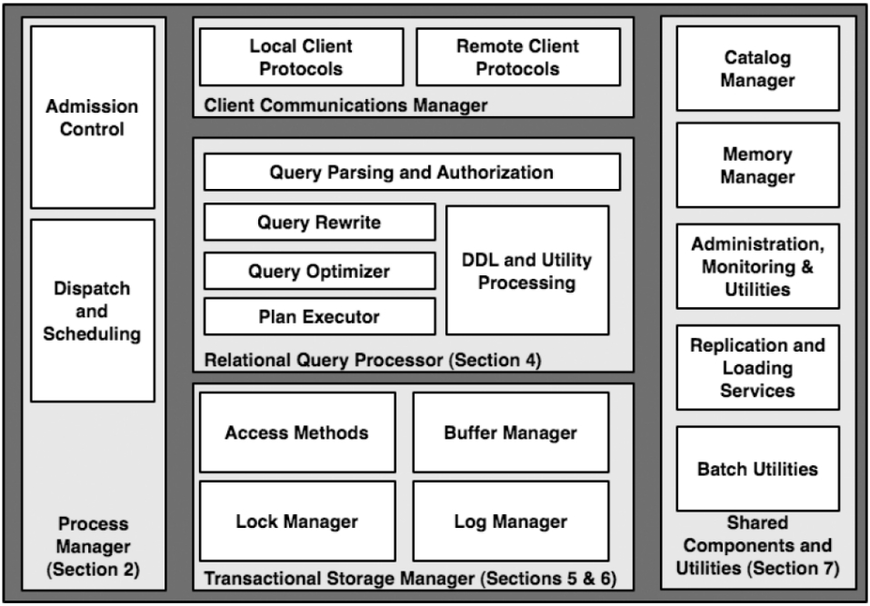
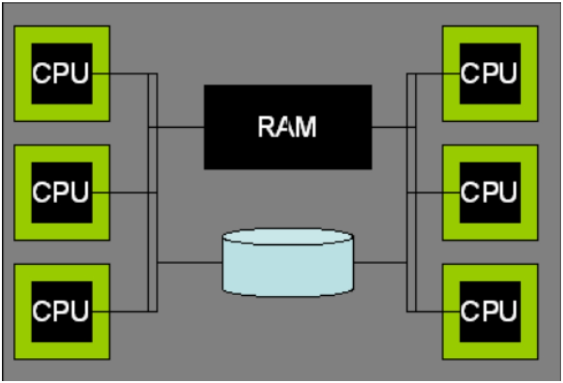
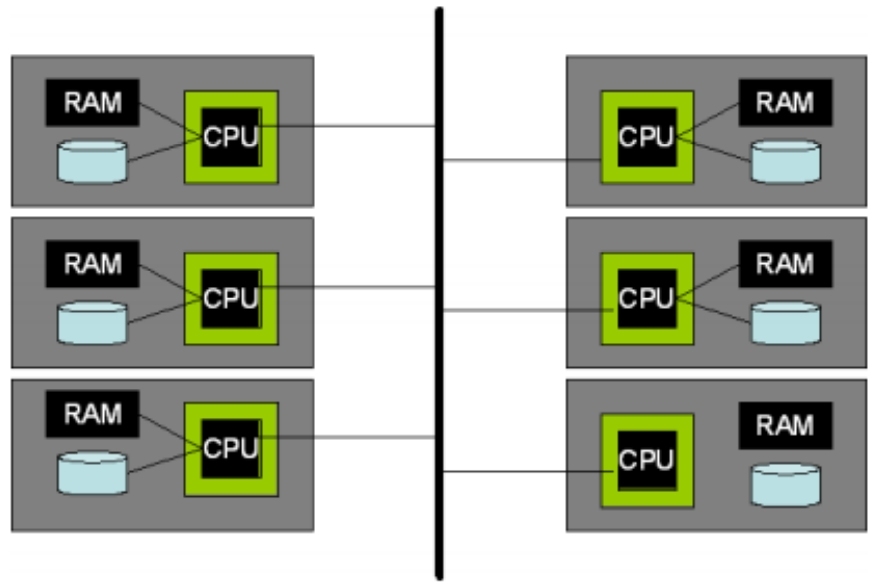
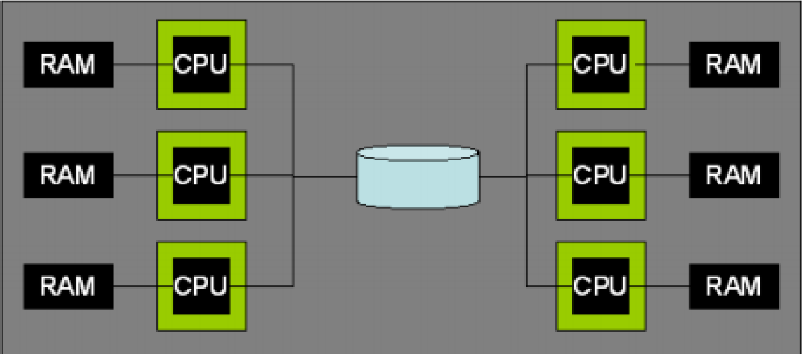
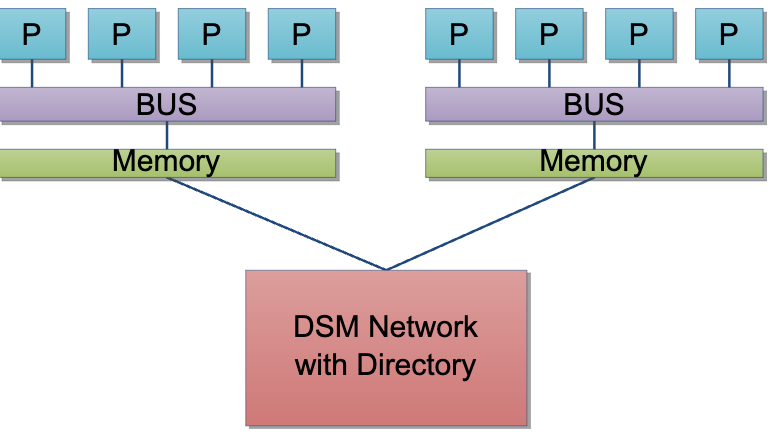

数据库系统架构论文
2024-03-26
DBMS 主要组件
注：Process Manager 并非单指分配进程，而是根据 DBMS 实际实现的进程模型，分配进程或线程。Admission Control 指是否立即处理该查询，或是等待系统有足够资源时再处理。
进程模型
每个 DBMS Worker 一个进程
- 优点：可移植性好（早期的 OS 对线程支持较差），可以利用 OS 保护措施
- 缺点：进程切换代价更大
- 案例：DB2，PostgreSQL，Oracle
每个 DBMS Worker 一个线程
线程又可分为 OS线程 或 DBMS 线程（轻量级线程，仅在用户空间调度而没有内核调度程序的参与）。
- 优点：线程切换代价较小，共享数据友好
- 缺点：OS 对线程不提供溢出和指针的保护，调试困难，可移植性较差（在当时）
- 案例：DB2，SQL Server，MySQL
进程/线程池
由中央进程/线程控制所有客户端连接，由进程/线程池管理所有 DBMS worker。大小可动态变化。
DBMS worker 之间会共享数据
- 磁盘缓冲池（buffer pool）
- 锁表
DBMS 可能支持多种进程模型，比如 DB2 支持以上四种，Oracle 在 Windows 系统上采用多线程模型。
准入控制
- 通过调度进程/线程来确保客户端连接数在一个临界值以下
- 在查询语句转换和优化后的执行阶段，通过分析查询所需资源来决定是否推迟查询执行
并行架构
共享内存（Shared-Memory）
在共享内存机器，OS 通常支持作业（进程或线程）被透明地分配到每个处理器上，并且共享的数据结构可以继续被所有作业所访问，所以上面四种进程模型可以运行良好。主要需要修改查询执行层，将单一的 SQL 并行到多个处理器上。
无共享（Shared-Nothing）
通过网络互联通信。表数据被水平分区到不同机器，对于每个 SQL 请求，会被发送到集群其他成员，然后各自并行执行查询本地所保存的数据。事务实现较复杂。可扩展性强。需要冗余数据来提高可用性。
共享磁盘（Shared-Disk）
单个 DBMS 执行节点发生故障不会影响其他节点访问整个数据库。需要手动协调多个节点的共享数据（分布式锁，分布式缓冲池）。
NUMA（Non-Uniform Memory Access）
处理器访问本地内存比远程内存更快。NUMA 允许共享内存系统扩展到更多数量处理器的规模。
关系查询处理器
查询解析
检查语法、引用、权限等，将 SQL 转换为内部形式（逻辑计划）。
查询重写
简化和标准化查询。例如
- 视图重写
- 简化常量表达式（
t.a < 10 + 2 + t.b=>t.a < 12 + t.b） - 谓词逻辑重写（
t.a < 10 and t.a > 20=>false） - 语义优化（
select t1.a from t1, t2 where t1.b = t2.b且外键约束把 t1.b 绑定到 t2.b=>select t1.a from t1）
查询优化
将查询内部表示形式（逻辑计划）转化为一个高效的执行计划（物理计划）。涉及
- 计划空间
- 选择率估算（直方图）
- 搜索算法（动态规划/级联搜索）
- 并行（两阶段方案：先生成单机执行计划，再转换为分布式执行计划。单阶段方案则直接生成分布式执行计划）
- 自动调优（如 learning optimizer）
查询执行
迭代器模型
class iterator {
iterator &inputs[];
void init();
tuple get_next();
void close();
}
可以通过引入 Exchange 算子来实现并行。
迭代器中元组可以是
- 缓冲池中元组的引用（需要 pin 住所在页）
- 从缓冲池中复制一份
索引引用行
- 使用物理地址 RID（例如 page id + slot num），只支持二级索引（非聚簇索引，减少聚簇索引 B+ 树分裂导致频繁的行移动）。速度快，但行移动开销大
- 使用主键。支持聚簇索引和二级索引，但二级索引回表会牺牲一些性能
数据仓库特点
- 位图索引，min-max索引，布隆过滤
- 需要快速批量导入数据
- 物化视图（可以查询的实际表）
- 重点优化基于雪花模型的聚合查询
- 列存
存储管理
主要有两种基本类型的存储管理器
- DBMS 直接和底层磁盘驱动交互
- DBMS 使用标准 OS 文件系统
主要从两方面优化
- 空间：物理存储上的临近性（顺序读写），创建大文件
- 时间：缓冲池替代 OS IO 缓冲机制（预读取，确保 WAL 落盘，双缓冲导致内存拷贝消耗）
事务
ACID
- 原子性：全做或全不做
- 一致性：满足完整性约束
- 隔离性：从应用开发者视角来看事务是隔离的，互不影响
- 持久性：出现故障不会丢失更新
三种主要的并发控制技术
- 严格两阶段锁（2PL）：读数据需读锁，写数据需排他锁。事务拥有的锁在事务结束时释放
- 多版本并发控制（MVCC）：为过去某一时间点的数据状态保存副本
- 乐观并发控制（OCC）：事务提交时检测读写历史来判断是否冲突，冲突则回滚
为减少锁请求和冲突，很多 DBMS 将 MVCC 或 OCC 作为 2PL 的一个补充。
事务隔离级别
- 读未提交：事务可以读任何已提交或未提交的数据（读操作不加锁）
- 读已提交：事务可以读任何已提交的数据（读操作加锁，读完立即释放）
- 可重复读：事务只能读取一个已提交数据的一个版本（读操作加上，事务结束释放）
- 串行化
除了 ANSI SQL 定义的隔离级别外，还有其他的隔离级别：游标稳定，快照隔离，读一致。
数据库标准恢复机制采用 WAL 日志，为优化性能
- 采用 DIRECT, STEAL/NOT-FORCE 模式运行
- 数据项原地更新
- 事务未提交时，其修改的缓冲页可以被刷盘
- 当事务提交时，缓冲池不必强制刷盘
- 采用逻辑操作和物理操作混合的日志模式（逻辑日志用于撤销，物理日志用于重做）
索引 B+ 树并发控制
- Latch-coupling 方案（Crabing 协议）
- Right-link 方案
解决幻读
- 谓词锁：锁定原始查询谓词所表示的逻辑区域（代价高）
- next-key 锁
- 索引插入操作需要为大于其 key 的下一个元组分配排他锁
- 读事务需要为下一个元组添加共享锁
共享组件
- 目录管理器
- 管理元数据（用户/数据库/表/列/索引等），元数据以表形式存储在数据库中
- 内存分配器
- 磁盘管理器
- 备份服务
- 物理备份
- 基于触发器的备份
- 基于日志的备份
- 管理、监控和工具